UDN
Search public documentation:
LightmassToolsKR
English Translation
日本語訳
中国翻译
Interested in the Unreal Engine?
Visit the Unreal Technology site.
Looking for jobs and company info?
Check out the Epic games site.
Questions about support via UDN?
Contact the UDN Staff
日本語訳
中国翻译
Interested in the Unreal Engine?
Visit the Unreal Technology site.
Looking for jobs and company info?
Check out the Epic games site.
Questions about support via UDN?
Contact the UDN Staff
라이트매스 툴
문서 변경내역: Daniel Wright 작성, 홍성진 번역.
개요
툴
스태틱 메시 라이팅 정보
스태틱 메시 상의 버텍스 대 텍스처 매핑에 대한 비교를 빠르게 해 볼 수 있는 대화창입니다. 그 둘 사이에서 다수의 메시를 빠르게 전환할 수도 있습니다. 대화창을 열려면 언리얼 에디터의 '보기' > '라이팅 정보' > '라이팅 스태틱메시 정보' 를 선택하면 됩니다.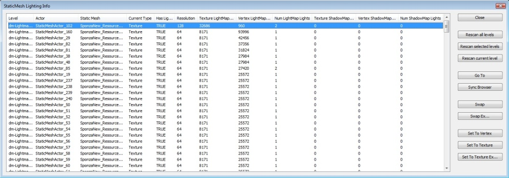
버튼
- Close 닫기 - 대화창을 닫습니다.
- Rescan all levels 모든 레벨 리스캔 - 맵의 모든 레벨에서 스태틱 메시를 리스캔한 다음 목록에 삽입합니다.
- Rescan selected levels 선택 레벨 리스캔 - 레벨 매니저 탭에 선택된 레벨에서 스태틱 메시를 리스캔합니다.
- Rescan current level 현재 레벨 리스캔 - 현재 레벨에서만 스태틱 메시를 리스캔합니다.
- Go To 이동 - 레벨에 선택된 메시로 이동합니다.
- Sync Browser 싱크 브라우저 - 콘텐츠 브라우저를 선택된 메시의 소스 스태틱 메시로 싱크합니다.
- Swap 스왑 - 선택된 항목의 매핑 방법을 맞바꿉니다.
- Swap Ex... Ex 스왑... - 선택된 항목의 매핑 방법을 맞바꾸며, 텍스처 매핑에 덮어쓸 해상도를 사용자에게 묻습니다.
- Set to Vertex 버텍스로 설정 - 선택된 항목이 버텍스 매핑을 사용하도록 설정합니다.
- Set to Texture 텍스처로 설정 - 선택된 항목이 텍스처 매핑을 사용하도록 설정합니다.
- Set to Texture Ex... 텍스처 Ex로 설정... - 선택된 항목이 텍스처 매핑을 사용하도록 설정하며, 덮어쓸 해상도를 사용자에게 묻습니다.
열
- Level 레벨 - 스태틱 메시 액터가 있는 레벨입니다.
- Actor 액터 - 스태틱 메시 액터의 이름입니다.
- Static Mesh 스태틱 메시 - 액터에 대한 소스 스태틱 메시입니다.
- Current Type 현재 유형 - 항목에 사용된 (버텍스냐 텍스처냐) 현재 매핑 유형입니다.
- Has Lightmap UVs 라이트맵 UV 소유 - 메시에 라이트맵 UV 가 있는지 없는지를 나타냅니다.
- Resolution 해상도 - 사용된 텍스처 라이트/섀도우 맵 메모리를 계산하는 데 사용되는 해상도입니다.
- Texture LightMap (Bytes) 텍스처 라이트맵 (바이트) - 텍스처 매핑된 라이트맵을 사용중인(/이었던) 경우 메시가 사용할 메모리 양입니다.
- Vertex LightMap (Bytes) 버텍스 라이트맵 (바이트) - 버텍스 매핑된 라이트맵을 사용중인(/이었던) 경우 메시가 사용할 메모리 양입니다.
- Num LightMap Lights 라이트맵 라이트 수 - 메시의 라이트맵 생성에 공헌하는 라이트 수입니다.
- Texture ShadowMap (Bytes) 텍스처 섀도우맵 (바이트) - 텍스처 매핑된 섀도우맵을 사용중인(/이었던) 경우 메시가 사용할 메모리 양입니다.
- Vertex ShadowMap (Bytes) 버텍스 섀도우맵 (바이트) - 버텍스 매핑된 섀도우맵을 사용중인(/이었던) 경우 메시가 사용할 메모리 양입니다.
- Num ShadowMap Lights 섀도우맵 라이트 수 - 메시의 섀도우맵 생성에 공헌하는 라이트 수입니다.
라이팅 빌드 정보
라이팅 빌드 정보 대화창은 '문제 애셋' 추적을 돕기 위해 지난 번 완료된 라이팅 빌드에 대한 정보를 제공해 줍니다. 다음과 같은 정보가 표시됩니다:라이팅 타이밍
다음의 라이팅 빌드 후의 스웜 스크린 캡처에 보면, 다른 것보다 오래 걸린 매핑이 있었음을 알 수 있습니다. 더 긴 'Processing Mappings' 줄을 보면 확실히 알 수 있습니다.
이 경우, 라이팅 빌드 정보 대화창의 '% 라이팅 시간' 열을 사용하면 문제있는 오브젝트를 쉽게 추적해 볼 수 있습니다. 대화창을 열려면 언리얼 에디터의 메뉴 보기 > 라이팅 정보 > 라이팅 빌드 정보 를 선택하면 됩니다.
더 긴 'Processing Mappings' 줄을 보면 확실히 알 수 있습니다.
이 경우, 라이팅 빌드 정보 대화창의 '% 라이팅 시간' 열을 사용하면 문제있는 오브젝트를 쉽게 추적해 볼 수 있습니다. 대화창을 열려면 언리얼 에디터의 메뉴 보기 > 라이팅 정보 > 라이팅 빌드 정보 를 선택하면 됩니다.
스태틱 메시 예제
다음 예제는 LightmassDayBright 에서 라이팅을 빌드한 이후 라이팅 빌드 정보 대화창에 표시되는 예제입니다.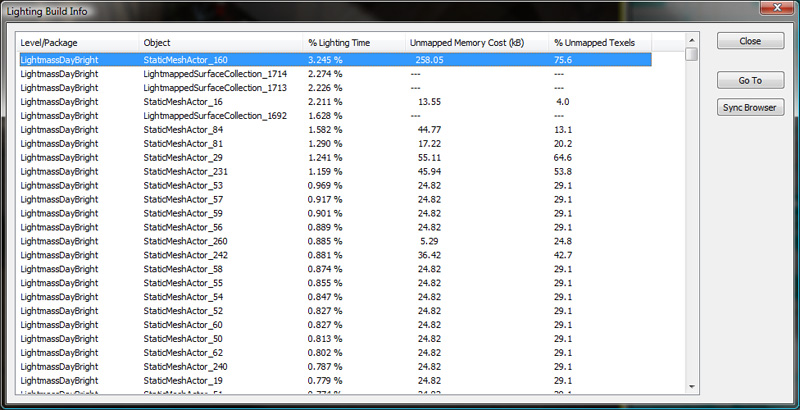
'% 라이팅 시간' 은 각 매핑에 걸린 라이팅 시간 총합에 대한 비율을 나타냅니다. 이 예제에서 비율이 가장 높은 것은 StaticMeshActor_160 입니다. 그 항목을 더블클릭하면 레벨의 바로 그 메시로 이동됩니다.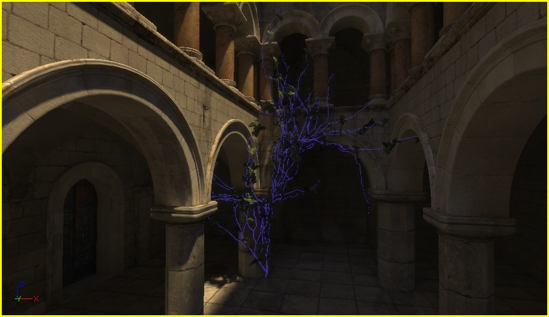
오브젝트를 선택한 상태로, 속성을 살펴보면 문제가 있는지 알아볼 수 있습니다: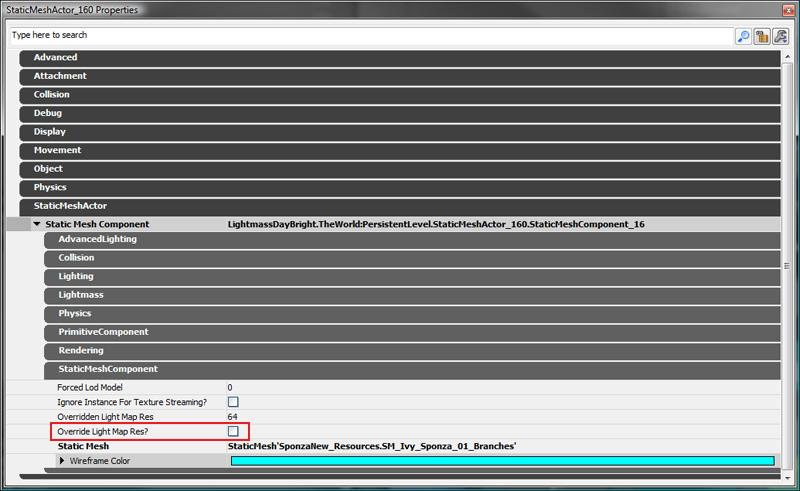
반전된 속성 bOverrideLightMapRes 가 체크되어 있지 않습니다. 즉 소스 스태틱 메시가 해상도를 조절함을 나타냅니다. 'SponzaNew_Resources.SM_Ivy_Sponza_01_Branches' 속성을 살펴보니: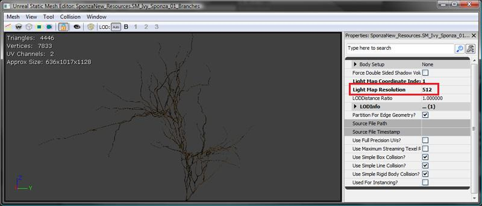
이 스태틱 메시에 대한 LightMapResolution (라이트맵 해상도)가 512 로 약간 높음을 알 수 있습니다. 스태틱 메시는 씬의 다른 오브젝트에 의해서도 사용될 수 있기에, 스태틱 메시 컴포넌트 상의 라이트맵 해상도를 덮어써서 이 문제를 해결할 수 있습니다. bOverrideLightMapRes (라이트맵 해상도 덮어쓰기?) 옵션을 체크하고 OverriddenLightMapRes (덮어쓴 라이트맵 해상도) 값을 128 로 설정하면 다음과 같은 타이밍 변화가 생깁니다:
라이트매핑된 표면 모음
라이팅을 빌드할 때, 엔진은 공면 표면상의 라이트맵 이음새를 줄이기 위한 라이트맵 생성용으로 다양한 BSP 조각을 병합합니다. 이러한 것을 라이팅 빌드 정보 대화창에 반영하기 위해, 그 매핑에 공헌된 브러시 모음집을 나타내는 임시 오브젝트가 생성됩니다. 그 오브젝트는 바로 LightmappedSurfaceCollection (라이트매핑된 표면 모음) 입니다. 에디터 뷰포트에서 다음 선택 부분의 결과 항목 중 하나에 더블클릭(하거나 'Go To' 버튼을 누르거나 )하면: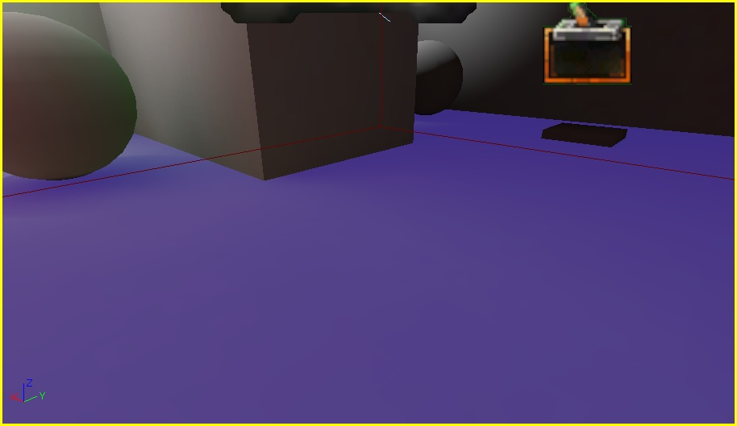
BSP 섹션이 하나 선택된 것처럼 보이기야 하겠지만, 사실 각기 다른 표면이 셋 선택된 것입니다. 아래 그림처럼 말입니다. 라이트맵 표면 모음에 대한 라이팅 빌드에 걸리는 시간을 줄이려면, 표면의 해상도를 낮추거나 혹은 LightmassSettings 를 약간씩 다르게 해서 강제로 라이팅을 별도로 빌드하게 합니다. 이를테면 하나에는 DiffuseBoost 를 (디폴트인) 1.0 으로 놔두고, 그 옆의 것은 1.001 로 준다든가요.
라이트맵 표면 모음에 대한 라이팅 빌드에 걸리는 시간을 줄이려면, 표면의 해상도를 낮추거나 혹은 LightmassSettings 를 약간씩 다르게 해서 강제로 라이팅을 별도로 빌드하게 합니다. 이를테면 하나에는 DiffuseBoost 를 (디폴트인) 1.0 으로 놔두고, 그 옆의 것은 1.001 로 준다든가요.
언매핑된 텍셀 및 메모리 비용
라이팅 빌드 정보 대화창에는 비효율적인 라이트맵 추적에 유용한 메모리가 포함된 열이 둘 더 있습니다.'언매핑된 메모리 비용 (kB)' 열은 그 오브젝트에 대해 언매핑된 텍셀이 낭비하는 메모리 양을 표시합니다.
'% 언매핑된 텍셀' 열은 언매핑된 오브젝트 라이트맵에 대한 텍셀 비율을 나타냅니다. 예를 들면 VCTF-Sandstorm 에서 라이팅을 빌드한 이후, '라이팅 빌드 정보' 대화창을 열고서 '언매핑된 메모리 비용 (kB)' 열을 클릭하여 메모리 비용 값을 높은 것에서 낮은 순으로 정렬합니다. 결과는 다음과 같습니다:
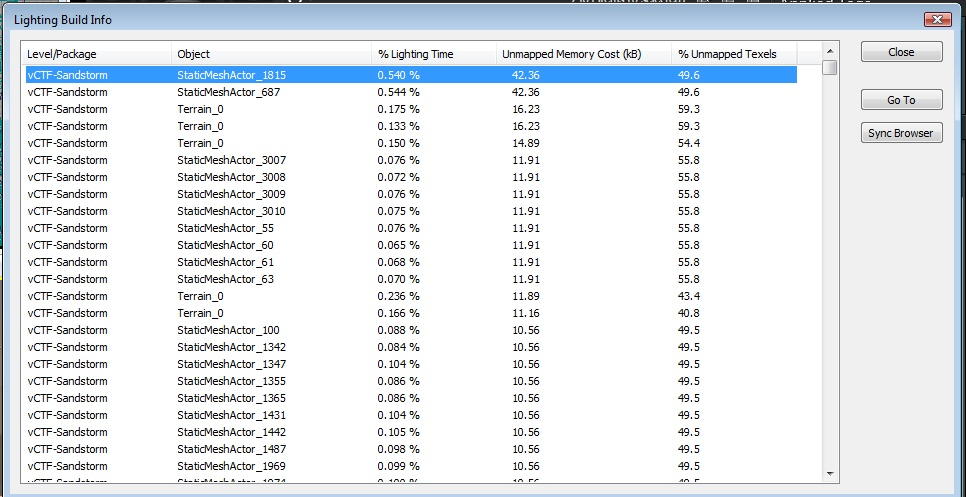
씬의 오브젝트로 점프해 가 보면, 다음과 같아 보입니다: 스태틱 메시에 우클릭하고 '콘텐츠 브라우저에서 찾기'를 선택하면, 콘텐츠 브라우저에서 이 액터에 대한 스태틱 메시가 선택됩니다. 이를 스태틱 메시 에디터에서 열고 UV 오버레이를 켜면, 다음과 같습니다:
스태틱 메시에 우클릭하고 '콘텐츠 브라우저에서 찾기'를 선택하면, 콘텐츠 브라우저에서 이 액터에 대한 스태틱 메시가 선택됩니다. 이를 스태틱 메시 에디터에서 열고 UV 오버레이를 켜면, 다음과 같습니다:
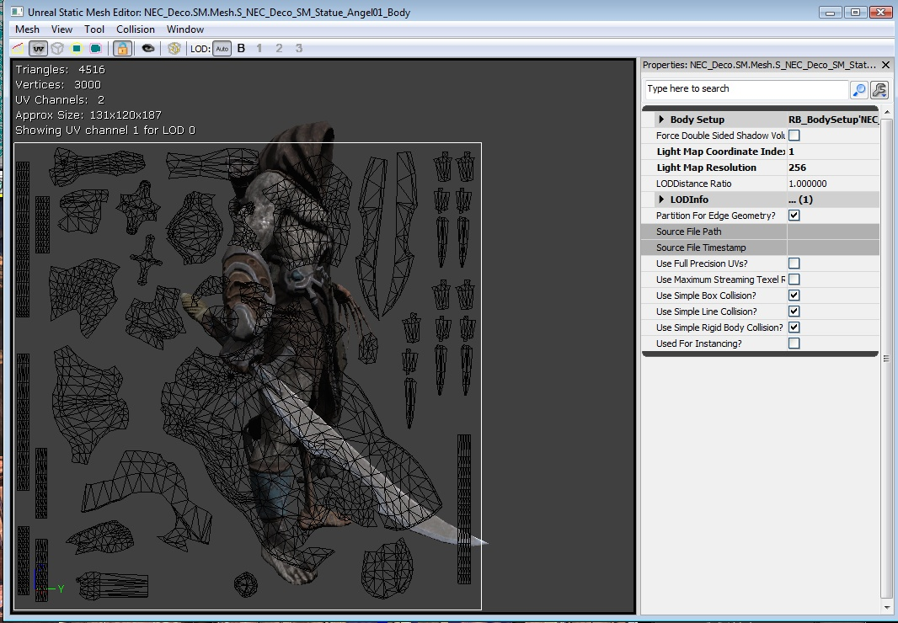
보시는 바와 같이 이 레이아웃에는 낭비가 꽤 있습니다. UV-오버레이의 거의 50% 에 해당하는 공간이 비어 있습니다. 이 메시의 라이트맵 UV 를 고쳐 주면 라이트맵 메모리 효율이 올라갈 것입니다.문제해결
라이트맵 에러 색
라이트매스가 Preview / Medium 품질 빌드에서 콘텐츠 에러를 접하면, 라이트맵의 색을 에러 색으로 덮어씁니다. High / Production 품질 빌드에서 라이트매스는 에러 색을 무시하고 에러가 없었던 양 라이팅을 계산하는데, 예상치 못한 결과가 날 수도 있습니다. Non-unique lightmap UV's 비-고유 라이트맵 UV - 영향받은 텍셀은 주황색이 됩니다. 즉 둘 이상의 트라이앵글이 텍셀 중심에 겹친다는 뜻으로, 한 번에 두 곳에 있도록 설정되어 있기에 텍셀이 올바르게 라이팅될 수 없습니다. 해결책은 아티스트가 만든 라이트맵 UV 를 고치거나, 스태틱 메시 에디터에서 새로운 UV 를 생성하고, LightMapCoordinateIndex (라이트맵 좌표 인덱스)를 적절히 설정해 주는 것입니다. 왼쪽의 주황색은 비-고유 라이트맵 UV 로 텍셀에 할당된 것입니다. 가운데는 비-고유 UV로 된 다른 메시로, 육면체의 모든 면이 UV 공간에 어떻게 겹치는지를 나타냅니다. 오른쪽은 올바른 고유 UV로 된 비슷한 메시로, UV 공간에 겹치는 트라이앵글이 없는 것입니다.

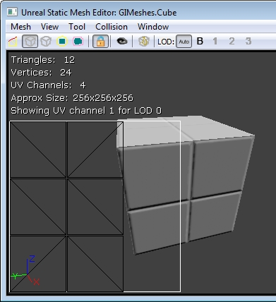
Wrapping lightmap UV's 랩핑 라이트맵 UV - 영향받은 텍셀은 초록이 됩니다. 스태틱 메시의 라이트맵 UV 가 전부 [0, 1] 범위에 있지 않을 때 발생합니다. 랩핑이라는 소리입니다. 솔루션은 아티스트가 만든 라이트맵 UV 를 고치거나 스태틱 메시 에디터에서 새로운 UV 를 생성하고, LightMapCoordinateIndex (라이트맵 좌표 인덱스)를 알맞게 설정하는 것입니다. Unmapped texels on static meshes 스태틱 메시의 언매핑된 텍셀 - 스태틱 메시의 노랑 텍셀은 보통 아래 있는 트라이앵글이 라이트맵 UV 공간에서 퇴화된 (제로-영역) 것이라는 신호입니다. 즉 둘 이상의 트라이앵글 버텍스가 똑같은 라이트맵 UV 를 가졌는데, 트라이앵글이 제로 라이트맵 영역을 가졌다는 뜻입니다. 텍스처 공간 절약을 위해 라이트맵 UV 를 이런 식으로 셋업하는 것도 괜찮긴 하지만, 그런 트라이앵글의 라이팅은 틀려질 거라는 점 유념하시기 바랍니다.
Unmapped texels on static meshes 스태틱 메시의 언매핑된 텍셀 - 스태틱 메시의 노랑 텍셀은 보통 아래 있는 트라이앵글이 라이트맵 UV 공간에서 퇴화된 (제로-영역) 것이라는 신호입니다. 즉 둘 이상의 트라이앵글 버텍스가 똑같은 라이트맵 UV 를 가졌는데, 트라이앵글이 제로 라이트맵 영역을 가졌다는 뜻입니다. 텍스처 공간 절약을 위해 라이트맵 UV 를 이런 식으로 셋업하는 것도 괜찮긴 하지만, 그런 트라이앵글의 라이팅은 틀려질 거라는 점 유념하시기 바랍니다.
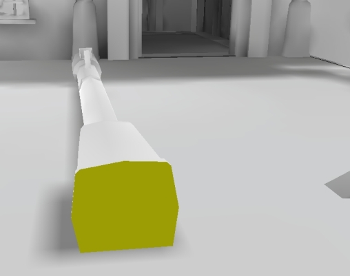
Unmapped texels on BSP BSP의 언매핑된 텍셀 - BSP의 노랑 텍셀은 BSP 해상도가 너무 낮음을, BSP 트라이앵글에 단 하나의 텍셀도 놓여있지 않음을 나타내기도 합니다. BSP 표면의 속성을 (F5 키로) 열고 Lightmap Resolution (라이트맵 해상도)를 낮은 수치로 (, 즉 더 많은 라이트맵 텍셀로) 변경해 주십시오.
고유 라이트맵 UV 생성하기
아래는 비-고유 라이트맵 UV 와 고유 라이트맵 UV 를 스태틱 메시 에디터에서 확인하는 예제입니다. 비-고유 라이트맵 UV 의 경우 예전 UE3 스태틱 라이팅이나 라이트매스로는 올바른 라이팅이 나오지 않습니다. 이 문제는 스태틱 메시 에디터에서 고유 라이트맵 UV 를 생성하여 쉽게 해결할 수 있습니다. 그 방법은, 메시 메뉴 아래의 고유 UV 생성 을 선택합니다. 열리는 옵션 창에서 사용되고 있지 않은 (보통 드롭다운의 마지막 번호) UV 채널을 선택합니다. OK 버튼을 눌러 UV 를 생성합니다. 이제 LightMapCoordinateIndex (라이트맵 좌표 인덱스)를 방금 생성된 UV 채널 번호로 설정하여 그 UV 를 사용할 메시를 설정해 줘야 합니다. 그 UV 는 UV 오버레이 표시 창 모드를 사용하여 볼 수 있습니다. 스태틱 메시에 대한 LightMapResolution (라이트맵 해상도) 역시 설정했는가 확인하십시오. 이 설정은 스태틱 메시 에디터에서, 또는 개별 프리미티브 컴포넌트 속성에서 오브젝트 별로 설정할 수 있습니다. 왼쪽은 비-고유 라이트맵 UV, 오른쪽은 생성된 고유 라이트맵 UV 입니다. 오른쪽 UV 에 겹치는 트라이앵글이 없다는 것에, 즉 고유하다는 것에 주목해 보시기 바랍니다.
 라이트맵에 대한 언래핑 메시 관련 팁은 Light Map Unwrapping KR 페이지를 참고해 주시기 바랍니다. 참고로 보통 아티스트가 3ds Max 같은 모델링 프로그램으로 라이트맵 UV 를 수동 작업해 주면 품질 면에서나 효율 면에서나 훨씬 나은 레이아웃을 얻을 수 있습니다.
라이트맵에 대한 언래핑 메시 관련 팁은 Light Map Unwrapping KR 페이지를 참고해 주시기 바랍니다. 참고로 보통 아티스트가 3ds Max 같은 모델링 프로그램으로 라이트맵 UV 를 수동 작업해 주면 품질 면에서나 효율 면에서나 훨씬 나은 레이아웃을 얻을 수 있습니다.
라이트매스 머티리얼 생성시 머티리얼 표현식 경고
머티리얼 특성은 라이트매스로 익스포트되나, 머티리얼은 어느 메시에 적용되었는지와는 관계없이 딱 한 버전만 익스포트됩니다. 즉 VertexColor 나 Transform 같은 메시-전용 머티리얼 표현식은 값이 올바르지 않을 것이란 뜻입니다. CameraVector, DestColor, GameTime 같은 뷰 또는 시간 의존 표현식 역시도 올바르게 캡처할 수 없습니다. 라이트매스가 머티리얼 특성을 익스포트할 때 유의미한/올바른 값을 생성해 내지 못한다는 사실때문에, 이러한 머티리얼 표현식은 고정된 값으로 컴파일될 것입니다. 디버깅용으로 WorldInfo 의 bVisualizeMaterialDiffuse (머티리얼 디퓨즈 시각화?) 옵션을 사용하여 라이트맵을 머티리얼 디퓨즈로만 덮어쓸 수 있습니다. 라이팅만 뷰모드의 라이트맵은 BaseEngine.ini 에서의 LightingOnlyBrightness (라이팅만 밝기) 옵션으로 스케일된다는 점 참고하시구요. 이 값을 (1,1,1) 로 설정하(고 에디터를 재시작하)면 익스포트되어 라이트맵에 저장된 머티리얼 디퓨즈 컬러를 실제 머티리얼 디퓨즈에 일치시킬 수 있습니다. 관련 (프리미티브별 및 레벨별) DiffuseBoost (디퓨즈 증폭) 옵션 전부가 1.0 으로 설정되었는지도 확인하십시오. 그 후 에디터에서 (이미시브 + 디퓨즈만 표시하는) 라이팅제외 뷰모드와 라이팅만 뷰모드를 전환해 가며 비교해 봅니다. 왼쪽 스크린샷은 라이팅제외 모드, 오른쪽은 bVisualizeMaterialDiffuse (머티리얼 디퓨즈 시각화?) 옵션을 체크한 상태로 빌드한 상태의 라이팅만 모드입니다.
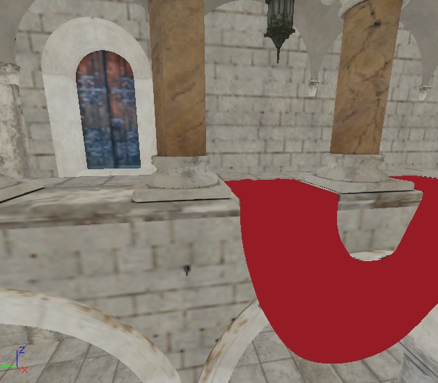
제대로 익스포트되지 않는 머티리얼이 있는 경우, Lightmass Replace 머티리얼 노드를 사용하여 라이팅 빌드용으로는 다른 버전의 머티리얼을 익스포트해 보십시오. 제대로 익스포트 불가능한 표현식이 어떻게 컴파일되는지는 아래 표와 같습니다:| 표현식 | 컴파일... |
|---|---|
| SceneDepth | 0.0f |
| DestColor | (0.0f,0.0f,0.0f) |
| DestDepth | 0.0f |
| DepthBiasedAlpha | SourceAlpha |
| SceneTexture | (0.0f,0.0f,0.0f) |
| WorldPosition | (0.0f,0.0f,0.0f) |
| CameraWorldPosition | (0.0f,0.0f,0.0f) |
| CameraVector | (0.0f,0.0f,1.0f) |
| LightVector | (1.0f,0.0f,0.0f) |
| ReflectionVector | (0.0f,0.0f,-1.0f) |
| Transform | 인풋 벡터 그대로 |
| TransformPosition | 인풋 벡터 그대로 |
| VertexColor | (1.0f,1.0f,1.0f,1.0f) |
| VertexColor w/ bUsedWithSpeedTree | (1.0f,1.0f,1.0f,0.0f) |
| RealTime | 0.0f |
| GameTime | 0.0f |
| FlipBookOffset | (0.0f, 0.0f) |
| LensFlareIntesity | 1.0f |
| LensFlareOcclusion | 1.0f |
| LensFlareRadialDistance | 0.0f |
| LensFlareRayDistance | 0.0f |
| LensFlareSourceDistance | 0.0f |